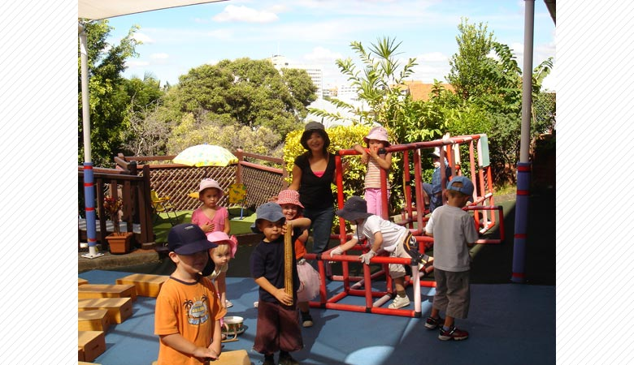

ICQAの一番の特徴は“English Only Policy” を授業中以外は強制をしていない点です。
強制されてする勉強ではなく、生徒個人個人が自分将来のために、自分の意志で勉強することの大切さを知ってもらいたいという考えから,
このスクールモットーである“自主性”と“自ら学ぶ意志を持って行動すること”を反映させているためです。
ICQAでは一般英語コースとIELTSコースを開講しています。
一般英語コースでは、読む、書く、聞く、話すの4つの基本スキルに加えて、
発音練習/英語の歌/クイズ/ディペートなども取り入れてバランスの良い授業となるよう心がけております。
ICQAでは一般英語コースとIELTSコースを開講しています。
IELTSコースはIntermediateとUpper-Intermediateの2つの異なるレベルが用意されておりますので、
学生の英語力に一番適したレベルで勉強することが可能なだけでなく、
クラス規模も平均10名程度の少人数で授業を行っており、教師陣が学生一人一人により多くの注意が払えるように工夫をしています。

英語研修終了後にオーストラリアのホテルで有給インターンのできるHotel Internship プログラムが人気です。
こちらのプログラムは原則としてワーキングホリデービザで渡航される方が対象となります。
“帰国後の就職活動にプラスになる経験をしたい方”または“楽しい留学ではなくやり遂げる留学”をしたいとお考えの方にお勧めです。

Internshipプログラムにご参加いただくメリット
•自分の英語力がどの程度通用するのか、英語の職場環境で自分の英語力を再認識できる
•自分で道を切り開き給料を得ながら海外で働くことで、自立心、責任感を養うチャンスがある
•オーストラリア人の上司だけではなく、世界中から働きに来ている人間と共に働く中で自分の視野を広げ国際感を養うチャンスがある

ICQAのボランティアプログラム
こちらのプログラムは大学の休みを利用しての留学、今後長期留学を考えているのでその前にお試し留学をして少し慣らしてみたいといった
短期の学生さんには是非英語学校だけでなくボランティアに参加して、短期間でさまざまな経験をするためにとても有効なプログラムです。

ICQAのボランティアプログラム（写真はチャイルドケア）
ボランティアの種類は日本語教師アシスタント、チャイルドケア、老人ホーム、特別養護学校、アニマルケア
以上5種類の中からお選びいただけます。
ICQAのボランティアプログラム（写真は日本語教師アシスタント）
ボランティアとして、オーストラリアの施設、教育機関などに属し、オーストラリアの会社の仕組み、社会の仕組み、仕事のあり方、
生活のあり方など、日本とは全く異なる文化、習慣、考え方をファーストハンドで経験することが可能です。
画面をクリックするとビデオが再生されます。
＜Cambridge International College English Course＞